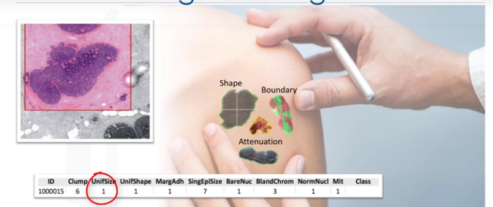
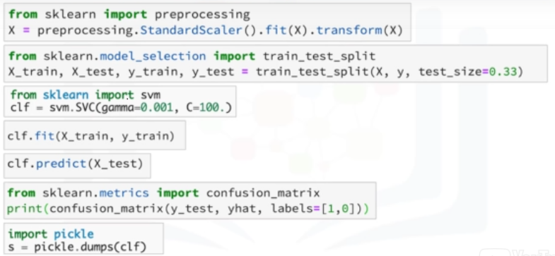
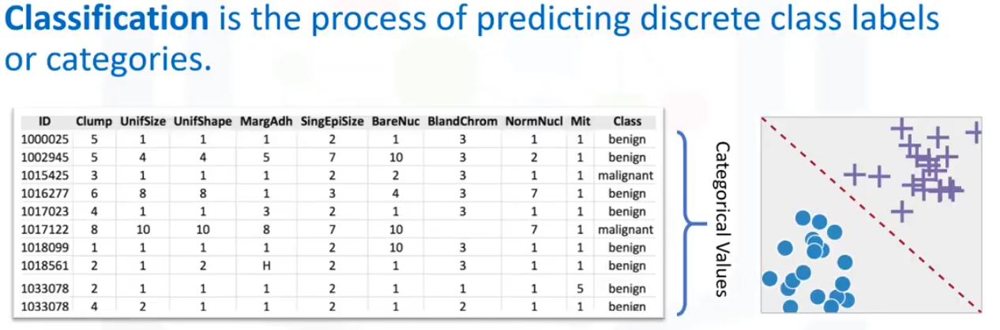
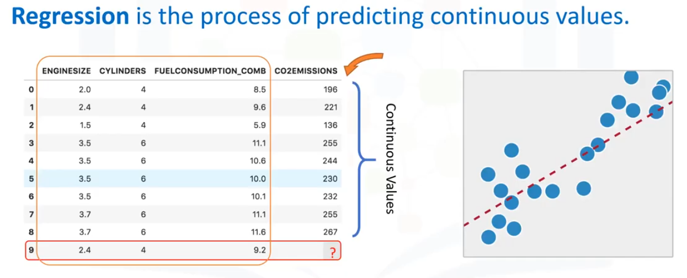
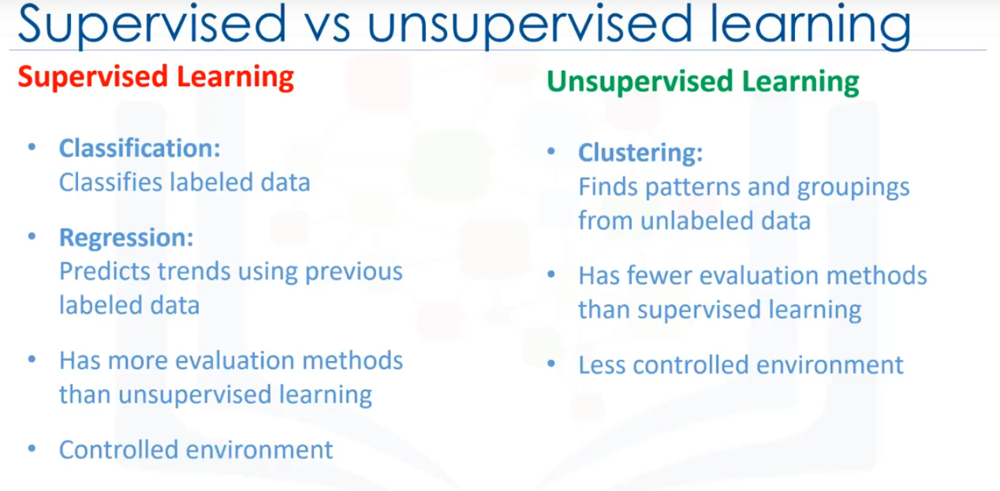

Introduccion a Machine Learning

Esta es una muestra de céluca humana extraída de un paciente. Y ésta tiene características... Por ejemplo, su espesor de aglutinación es 6, la uniformidad de tamaño celular es 1, su adhesión marginal es 1 y así.
Una de las preguntas más frecuentes que podemos hacerm, en este punto es: "¿Es una célula benigna o maligna?"

Bueno, imagine que ha obtenido un conjunto de datos que contiene características de miles de muestras de células humanas extraídas de pacientes que se creía que estaban en riesgo de desarrollar cáncer.
El análisis de los datos originales mostró que muchas de las características diferían significativamente entre muestras benignas y malignas. debes limpiar los datos, seleccionar un algoritmo adecuado para construir un modelo
de predicción, y entrenar tu modelo para entrenar los patrones de células benignas o malignas dentro de los datos. Una vez que el modelo ha sido entrenado por medio de datos iterativamente, se puede utilizar para predecir tu
célula nueva o desconocida con una precisión bastante alta.
Esto es machine learning!
Es la forma en que un modelo de machine learning puede hacer la tarea de un médico o, al menos, ayudarlo para hacer el proceso más rápido.
Machine Learning es el subcampo de la ciencia de la computación que "da a las computadoras la habilidad de aprender sin ser programadas explícitamente". Supongan que tienen un conjunto de datos de imágenes de animales como, por ejemplo,
perros y gato, y quieran una aplicación o software sea capaz de reconocerlos y diferenciarlos.
Lo primero que tiene que hacer es interpretar las imágenes como un conjunto de características. Por ejemplo, ¿la imagen muestra los ojos del animal?
Si es así, ¿cuál es su tamaño?
¿Tiene orejas?
¿Qué hay de una cola?
¿Cuántas patas?
¿Tiene alas?
Antes de machine learning, cada imagen se transformaría en un vector de características. Entonces, tradicionalmente, tendríamos que escribir algunas reglas o métodos para que las computadoras sean inteligentes y detecten a los animales.
Pero, fue un fracaso. ¿Por qué? Bueno, como podrás adivinar, se necesitaba muchas reglas, muy dependientes del conjunto de datos actual, y no lo suficiente generalizadas como para detectar casos duera de la muestra. Este es el momento en que machine
learning entró en escena. Unsar ML nos permite construir un modelo que observe todos los conjuntos de características y su correspondiente tipo de animales y aprender el patrón de cada animal. Se trata de un modelo construido por algoritmos de machine learning.
Detecta sin haber sido programado explícitamente para hacerlo, en esencia, el aprendizaje automático sigue el mismo proceso que un niño de 4 años utiliza para aprender, entender y diferenciar a los animales.
Así, los algoritmos de ML, inspirados por el proceso de aprendizaje humano, iterativamente aprenden de los datosm y permiten que las PC's encuentren información oculta. Estos modelos nos ayudan en una variedad de tareas, tales como el reconocimiento de objetos,
resúmenes, recomendaciones y así.
Machine Learning afecta a la sociedad de una forma muy influyente. He aquí algunos ejemplos de la vida real.
- Netflix & Amazon → Recomendación de vídeos, películas y programas que ver.
- Bancos → Toma de decisión al aprobar una solicitud de préstamo.
- Las compañías de telecomunicaciones → Usan datos demográficos de sus clientes para segmentarlos, o predecir si ellos se retirarán de su compañía el próximo mes.
- Chatbots
- Reconocimiento facial
Cada uno utiliza técnicas y algoritmos diferentes de ML. Algunas técnicas son:
-
Técnica de Regresión/Estimaciónse usa para predecir un valor continuo, por ejemplo, predicción de cosas como el precio de una casa basada en sus características, o para estimar la emisión de CO2 del motor de un coche.
-
Técnica de Clasificación para predecir la clase o categoría, por ejemplo, si una célula es benigna o maligna, o si un cliente se va a retirar o no.
-
Técnica de asociación se usa para buscar elementos o sucesos que a menudo se producen conjuntamente, por ejemplo, artículos de comestibles que normalmente son comprados conjuntamente por un cliente en particular.
-
Detección de anomalías se usa para descubrir casos anormales e inusuales,por ejemplo para la detección de fraude de tarjetas de crédito.
-
La minería secuencial se usa para predecir el siguiente suceso, por ejemplo, la secuencia de pulsación en sitios web.
-
La reducción de dimensión se usa para reducir el tamaño de los datos.
-
Finalmente, los sistemas de recomendación esto asocia las preferencias de la gente con otros que tienen gustos similares, y recomienda nuevos artículos para ellos, como libros o películas.
"¿Cuál es la diferencia entre Inteligencia Artificial (o IA) y Machine Learning (ML) y Deep Learning?"
IA trata de hacer las computadoras interligentes para imitar las funciones cognitivas de los seres humanos. IA es un campo general con un amplio alcance, incluyendo:
- Proceso de lenguaje, creatividad y resumen.
Machine Learning es la rama de la IA que cubre las partes estadísticas de la Inteligencia Artificial. Enseña a las PC's a resolver problemas al mirar cientos o miles de ejemplos, aprender de ellos, y luego usar esa experiencia para resolver el mismo problema
en nuevas situaciones.
Deep Learning, es un campo muy especial de Machine Learning donde las computadoras pueden aprender y tomas decisiones inteligentes por su cuenta. Involucra un nivel más profundo de automatización en comparación con la mayoría de los algortimos de machine learning.
Python para Machine Learning
Python es un lenguaje de programación de propósito general popular y potente que surgió recientemente como el idioma preferido entre los científicos de datos. Puede escribir su algortimo de machine learning usando Python, y funciona muy bien. Sin embargo,
hay muchos módulo y bibliotecas ya implementados en Python que pueden hacer su vida mucho más fácil. Tratamos de introducir paquetes de Python en este curso y usarlos en los laboratorios para dar una mejor experiencia. El primer paquete es Numpy,
una biblioteca de matemáticas para trabajar con arreglos de n-dimensiones en Python. Esta te permite realizar cálculos de forma eficiente y eficaz. Es mejor que Python regular debido a sus increíbles capacidades, por ejemplo, para trabajar con arreglos,
diccionarios, funciones, tipos de datos y trabajar con imágenes, necesitas conocer Numpy.
SciPy es una colección de algoritmos numéricos y herramientas de dominio específico, incluyendo procesamiento de señal, optimización, estadísticas y mucho más. SciPy es una buena biblioteca para la computación científica y de alto rendimiento.
Matplotlib es un paquete muy popular que proporciona trazado 2D, así como trazado 3D.
El conocimiento básico acerca de estos 3 paquetes, que están construidos sobre Python, es un buen activo para los científicos de datos que quieran trabajar con problemas del mundo real. Análisis de datos con Python
Este curso cubre la mayoría de los temas útiles en estos paquetes. La biblioteca Pandas es una biblioteca de Python de muy alto nivel que proporciona estructuras de datos de alto rendimiento, fáciles de utilizar, tiene muchas funciones para la importación,
manipulación y análisis de datos.
En particular, ofrece estructuras de datos y operaciones para la manipulación de tablas numéricas y series de tiempo. Scikit-learn es una colección de algortimos y herramientas para machine learning, que es nuestro objetivo aquí, como vamos a usar scikit-learn en los
laboratorios explicamos que scikit-learn es una biblioteca gratuita de machine learning para el lenguaje de programación Python. Tiene la mayoría de los algoritmos de clasificación, regresión y agrupamiento y está diseñada para trabajar con las bibliotecas
numéricas y científicasde Python, NumPy y SciPy.

Además, incluye una documentación muy buena, encima de eso, la implementación de modelos de machine learning con scikit-learn es realmente fácil, con unas pocas líneas de código Python, la mayoría de las tareas que se deben realizar en un pipeline de machine learning
se implementan ya en scikit-learn , incluyendo, preprocesamiento de datos, selección de características, extracción de características, división de entrenamiento/prueba, definición de los algoritmos, modelos de ajuste, parámetros de ajuste, predicción, evaluación y explotación
del modelo.
Básicamente, los algortimos de ML se benefician de la estandarización del conjunto de datos, si hay algunos valores atípicos o campos de escalas diferentes en su conjunto de datos, tiene que arreglarlos.
El paquete de preprocesamiento de scikit-learn proporciona varias funciones de utilidad y las clases de transformación para cambiar los vectores de características en bruto en una forma adecuada de vector para modelado. Hay que dividir el conjunto de datos en
conjuntos de entrenamiento y pruebas para entrenar su modelo y luego probar la precisión del modelo por separado.
El Scikit-learn puede dividir arreglos o matrices en subconjuntos aleatorios de entrenamiento y pruebas para ti, en una línea de código; entonces, puedes configurar tu algoritmo. Por ejemplo, puede crear un clasificador utilizando un algoritmo de clasificación de vector de soporte.
Llamamos a nuestra instancia de estimador 'clf', e inicializamos sus parámetros.
Ahora, puedes entrenar tu modelo con el conjunto de entrenamiento. Al pasar nuestro conjunto de entrenamiento al método 'fit', el modelo 'cfl' aprende a clasificar casos desconocidos. A continuación, podemos utilizar nuestro conjunto de pruebas para ejecutar predicciones.
Y, el resultado nos dice cuál es la clase de cada valor desconocido, además, puede utilizar distintas métricas para evaluar la precisión del modelo, por ejemplo, utilizando una matriz de confusión (confusion_matrix) para mostrar los resultados y finalmente, guardar el modelo.
Aprendizaje supervisado y no supervisado
Una manera fácil de empezar a entender el concepto de aprendizaje supervisado es observando directamente a las palabras que lo componen.
Supervisado significa observar y dirigir la ejecución de una tarea, proyecto o actividad. Obviamente, no vamos a estar supervisando a una persona. En vez de eso, estaremos supervisando un modelo de machine learning que podría ser capaz de producir regiones de clasificación como la que
vemos aquí.

Entonces, ¿cómo supervisamos un modelo de machine learning?
Lo hacemos "educando" el modelo, es decir, cargamos el modelo con conocimiento para que pueda predecir las instancias futuras. Pero... esto nos lleva a la siguiente pregunta, que es:
"¿Cómo se educa exactamente un modelo?"
Nosotros educamos el modelo entrenándolo con algunos datos de un conjunto de datos con etiquetas. Es importante tener en cuenta que los datos están etiquetados.
¿Y qué aspectos tiene un conjunto de datos etiquetado?
Puede verse como esto.

Este ejemplo se toma del conjunto de datos de cancér, como puede ver, tenemos algunos datos históricos de los pacientes, y ya conocemos la clase de cada fila. Comencemos por introducir algunos componentes de esta tabla. Los nombres aquí arriba, que se llaman Espesor de grupo.
Uniformidad del tamaño de la celda. Si gráfica estos datos y mira un solo punto de datos en el gráfico, obtendrá todos estos atributos. Esto haría una fila en este gráfico, a la que también se refiere como una observación. Mirando directamente el valor de los datos, puede tener dos clases.
La primera es numérica, cuando se trata de machine learning, los datos utilizados con más frecuencia son numéricos.
El segundo es categórico, es decir, no es numérico, porque contiene caracteres en lugar de números. En este caso, es categórico porque este conjunto de datos se hace para Clasificación.
Existen dos tipos de técnicas de Aprendizaje Supervisado, son: clasificación y regresión.
La clasificación es el proceso de predecir una categoría o etiqueta de clase discreta. La regresión es el proceso de predicción de un valor continuo en contraposición a la predicción, un valor categórico en Clasificación. Observe este conjunto de datos:


Está relacionado con las emisiones de CO2 de diferentes coches. Incluye el tamaño del motor, cilindros, consumo de combustible y emisiones de CO2 de varios modelos de coches. Dado este conjunto de datos, puede utilizar regresión para rpedecir la emisión de CO2 de un
nuevo coche, usando otros campos, por ejemplo, el tamaño del motor o el número de cilindros. Ya que conocemos el significado del aprendizaje supervisado.
¿Qué crees que significa aprendizahe no supervisado?
No supervisamos el modelo, dejamos que tranaje por su cuenta para descubrir información que puede no ser visible para el ojo humano. El algoritmo entrena con el conjunto de datos, y extrae conclusiones sobre datos sin etiquetar. En términos generales, el aprendizaje no supervisado tiene algoritmos
más difíciles que el aprendizaje supervisado, ya que sabemos poco a nada sobre los datos o los resultados que se esperan.
Reducción de la dimensión, estimación de densidad, análisis de cesta de mercado y agrupación en clústeres son las técnicas de machine learning no supervisado usadas más ampliamente.
La reducción de dimensión y/o la selección de características desempeñan un gran papel reduciendo las características haciendo que la clasificación sea más fácil.
El análisis de la canasta de mercado es una técnica de modelado basada en la teoría de que si se compra un cierto grupo de artículos, es más probable que compres otro grupo de artículos.
La estimación de densidad es un concepto muy simple que se usa principalmente para explotar los datos y encontrar alguna estructura interna.
Y finalmente, agrupamiento; el agrupamiento es considerado como una de las técnicas más populares en machine learning no supervisado, utilizada para agrupar los puntos de datos u objetos similares de algún modo. El análisis de clústeres tiene muchas aplicaciones en diferentes dominios, ya sea que un banco
quiera segmentar a sus clientes en función de determinadas características, o de ayudar a un individuo a organizar y agrupar sus tipos de música favoritos.
En términos generales, sin embargo, la agrupación se usa principalmente para: Descubrimiento de estructuras, Sintetización y Detección de anomalías.
Por lo tanto, para recapitular, la diferencia entre el Aprendizaje supervisado y no supervisado es que el aprendizaje supervisado se ocupa de los datos etiquetados mientras que el no supervisado se ocupa de datos no etiquetados.

El aprendizaje supervisado, tenemos algoritmos de ML para Clasificación y Regresión.
En el aprendizaje no supervisado, tenemos métodos como el agrupamiento.
En comparación con el aprendizaje supervisado, el no supervisado tiene menos modelos y menos métodos de evaluación que se puedan usar para asegurarse de que el resultado del modelo es preciso.
El aprendizaje no supervisado crea un entorno menos controlable, ya que la máquina esta creando resultados para nosotros.